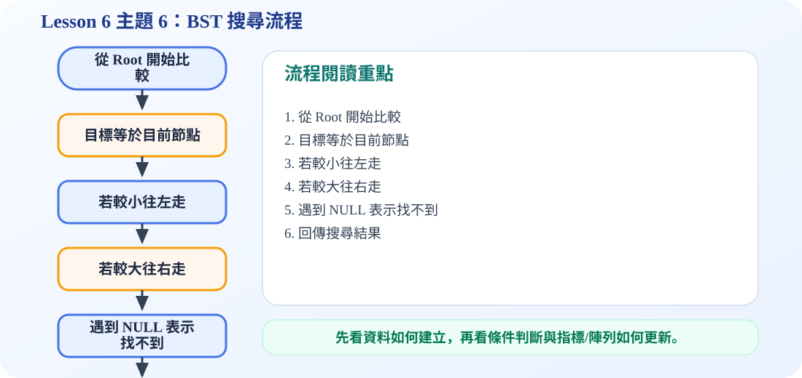

一、BST 的基本定義
核心概念
BST 是一棵 binary tree，但它多了一個排序規則：對於任一節點 x，左子樹所有節點的值都小於 x，右子樹所有節點的值都大於 x。這個規則讓我們搜尋時不必看完整棵樹。
投影片 22 的重點：左子樹所有值小於節點值；右子樹所有值大於節點值。
二、BST 搜尋流程
三、互動動畫：搜尋 1、8、15、16
搜尋 15 時會走 7 → 14 → 10 → 16，因為 15 小於 16，所以接下來應該往 16 的左邊走；若左邊是空，就代表找不到。
四、BST 與 Traversal 的關係
BST 最重要的性質之一是：對 BST 做 inorder traversal，會得到由小到大的結果。原因是 inorder 的順序是 Left → Visit → Right，而 BST 的左邊較小、節點在中間、右邊較大，所以自然會變成排序。
五、C 程式碼：建立 BST、搜尋與 Inorder 排序
binary_search_tree.c
包含 Node 結構、insert、search、inorder 與 main 測試。程式會先插入資料，再用 inorder 印出排序結果。
/*
中文註解版程式：binary_search_tree.c
說明：主題 6：Binary Search Tree 示範。包含插入、搜尋與 inorder 排序輸出。
閱讀方式：先看資料結構定義，再看操作函式，最後看 main() 如何測試。
*/
// 匯入標準輸入輸出函式庫，提供 printf / scanf 等功能。
#include <stdio.h>
// 匯入標準函式庫，提供 malloc / free / exit 等記憶體與程式控制功能。
#include <stdlib.h>
// 定義節點結構：資料欄位存節點內容，指標欄位負責連到其他節點。
typedef struct Node {
int key;
struct Node *left;
struct Node *right;
} Node;
// 建立新節點：配置記憶體、填入資料，並把左右指標初始化為 NULL。
Node* createNode(int key) {
Node* n = (Node*)malloc(sizeof(Node));
n->key = key;
n->left = NULL;
n->right = NULL;
return n;
}
// BST 插入：比目前節點小往左，大往右；空位置就是新節點位置。
Node* insert(Node* root, int key) {
if (root == NULL) return createNode(key); // 空位置就是插入點
if (key < root->key)
root->left = insert(root->left, key); // 較小的 key 放左子樹
else if (key > root->key)
root->right = insert(root->right, key); // 較大的 key 放右子樹
return root;
}
// BST 搜尋：從 root 開始比較，小往左、大往右，走到 NULL 表示找不到。
Node* search(Node* root, int key) {
if (root == NULL || root->key == key)
return root;
if (key < root->key)
return search(root->left, key);
else
return search(root->right, key);
}
// Inorder 走訪：Left → Visit → Right；套用在 BST 會得到由小到大的排序。
void inorder(Node* root) {
if (root == NULL) return; // 遞迴終止條件：空節點不需要處理
inorder(root->left); // 先走左子樹
printf("%d ", root->key); // 再拜訪目前節點
inorder(root->right); // 最後走右子樹
}
// 主程式：建立測試資料，呼叫上方函式，觀察輸出結果。
int main(void) {
int data[] = {7, 3, 14, 2, 4, 10, 16, 1, 8, 9};
int n = sizeof(data) / sizeof(data[0]);
Node* root = NULL;
for (int i = 0; i < n; i++)
root = insert(root, data[i]);
printf("Inorder sorted result: ");
inorder(root);
printf("\n");
int target = 8;
Node* ans = search(root, target);
if (ans != NULL)
printf("Find %d: FOUND\n", target);
else
printf("Find %d: NOT FOUND\n", target);
return 0;
}
六、考試重點
BST 搜尋不是從左到右全部掃描，而是每次比較後只走一邊。若樹很平衡，搜尋效率很好；若樹很歪，最壞情況可能退化成 linked list。
可編輯 C 程式範例：含中文註解與線上編輯器
這一段提供可直接修改的 C 程式碼。可以按「複製程式」貼到線上編輯器執行，也可以下載 .c 檔案。
程式題目教學內容：Binary Search Tree 搜尋與排序
一、程式題目講解
本題示範 BST 的插入、搜尋與 inorder 排序輸出。學生需要理解 BST 的規則：左子樹小於 root，右子樹大於 root。
二、完整程式碼
完整可執行程式碼已保留在上方「可編輯 C 程式範例：含中文註解與線上編輯器」區塊中，檔名為 binary_search_tree.c。該程式碼已加入中文註解，學生可以直接複製到 OnlineGDB、Programiz 或 OneCompiler 執行。
三、程式執行結果
Inorder sorted result: 1 2 3 4 7 8 9 10 14 16
Find 8: FOUNDInorder 輸出為 1 2 3 4 7 8 9 10 14 16，代表 BST 透過中序走訪可得到排序結果；Find 8 顯示 FOUND，表示程式依照 BST 規則成功找到 8。
四、程式流程圖與流程圖說明
本頁下方已保留原本的程式流程圖。閱讀流程圖時，可以依序掌握「初始化資料或節點 → 執行主要函式或判斷 → 輸出結果」的過程。先把資料逐一插入 BST，再用 inorder 印出排序結果，最後呼叫 search 找 8。搜尋時若目標小於目前節點就往左，若大於目前節點就往右。
五、重要函數與語法說明
insert()：依照大小規則插入節點；search()：依照 BST 規則搜尋資料；inorder()：輸出排序結果；strcmp 不使用，本範例以整數比較為主。
六、整體說明
本題重點是 BST 把資料排列成可搜尋的樹形結構；中序走訪可排序，搜尋則可減少不必要比較。
程式流程圖：BST 搜尋流程
下圖是本主題對應的程式執行流程，適合搭配本頁 C 程式碼一起看。

流程講解
- BST 搜尋從 root 開始，因為 root 可決定要往左或往右。
- 若 target 小於目前節點，代表答案只可能在左子樹。
- 若 target 大於目前節點，代表答案只可能在右子樹。
- 若一路走到 NULL，表示資料不存在於 BST 中。
這張流程圖把本頁程式的執行順序整理成一條清楚路徑。閱讀時先看輸入與資料如何建立，再看條件判斷、指標或陣列索引如何改變，最後用輸出結果確認程式邏輯是否正確。